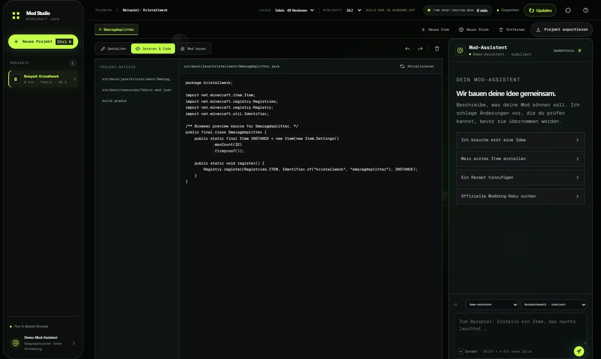

🎨
Pixel für Pixel
Zeichne, fülle, radiere und ändere Farben. Die Skizze bleibt mit der gespeicherten Textur des Projekts verbunden.
TexturBeschreibe, zeichne und bearbeite deine Mod in einer lokalen Werkbank. Die Skizze bleibt editierbar, Java-Quelltext entsteht aus deinem Projekt und KI bleibt optional.

Jeder Bereich hängt an demselben lokalen Mod-Projekt: Eigenschaften, Textur, Vorschau und generierter Quelltext bleiben zusammen.
Zeichne, fülle, radiere und ändere Farben. Die Skizze bleibt mit der gespeicherten Textur des Projekts verbunden.
Textur.bbmodel öffnen oder Java-Block/Item-JSON importieren. Textur und Cube-Geometrie werden lokal übernommen.
Eigenschaften, Java-Quelltext und Ressourcen deines Mods direkt in der Werkbank ansehen und bearbeiten.
QuelltextBaue ein Fabric-JAR für das freigeschaltete Minecraft-Ziel oder exportiere das Quellprojekt. Setup und Portable-App bringen Node.js, JDK und Gradle mit.
Build
Versionsbewusste Erklärungen, offizielle Doku-Suche auf Wunsch und ein lokales, bearbeitbares Gedächtnis für deine Vorlieben. ChatGPT oder Ollama.
KI optionalEin Mini-Ausschnitt des Textureditors. Die volle Oberfläche mit Projekten, 3D-Vorschau und Assistent läuft in der Browser-Testversion.
Klicken oder ziehen zum Zeichnen. Rechtsklick radiert. Im echten Editor landet jeder Strich direkt in der Projekttextur.
Vorhandene Funktionen und nächste Ausbauziele sind klar getrennt. Loader- und Versionskompatibilität wird nicht vorgetäuscht.
Frühe Alpha. Details im Projektstatus und in der Roadmap.
Das Setup installiert App und Laufzeiten unter %LOCALAPPDATA%\Programs\ModStudio. Projekte und Zugangsdaten bleiben lokal; der Server bindet an 127.0.0.1.
Modspire 0.3.2 enthält Mod Studio bereits: aus jedem der fünf Layouts heraus öffnen, ohne separate Installation.
Zu Modspire →npm install npm run css:build npm start